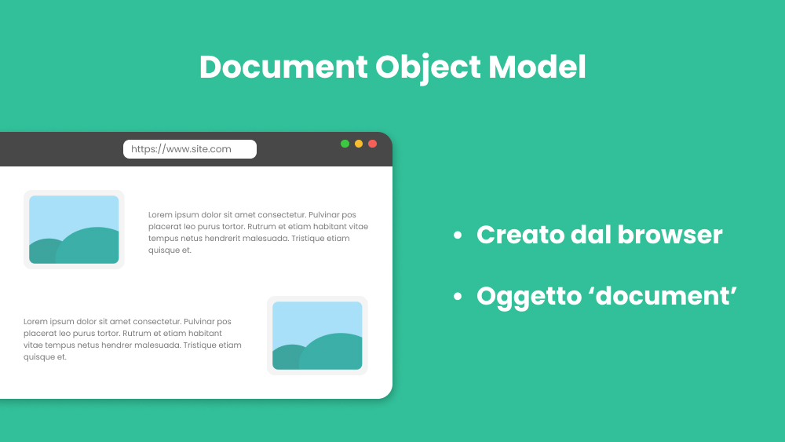
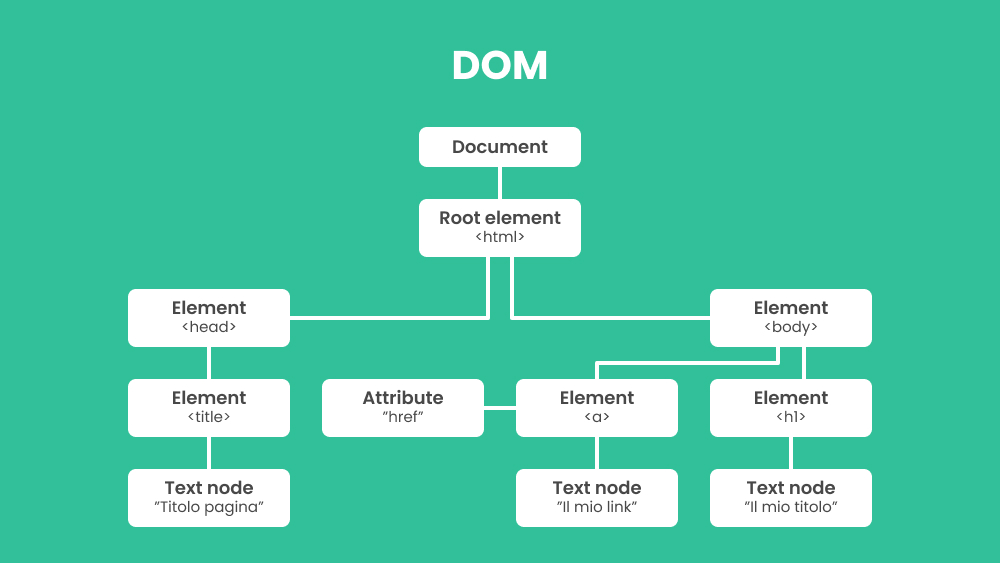

DOM 01 - Document Object Model
Introduzione
Il Document Object Model (DOM) è una rappresentazione strutturata e programmabile di un documento HTML creata dal browser quando viene caricata la pagina.
Nel momento in cui il documento viene caricato dal browser, questo crea un oggetto document, con le sue proprietà e i suoi metodi, che quindi può essere manipolato tramite JavaScript.
Grazie al DOM, possiamo accedere e modificare i contenuti, la struttura e lo stile di una pagina web in modo dinamico. Questo consente di creare esperienze interattive e reattive per gli utenti.
Struttura del DOM
Il DOM rappresenta un documento come una gerarchia ad albero di nodi. Ogni nodo nell'albero rappresenta una parte del documento, come un elemento HTML, un attributo o il testo stesso.
Ad esempio, un documento HTML può essere rappresentato come segue:
Come funziona il DOM?
Il DOM fornisce un'interfaccia che consente di accedere e modificare il contenuto e la struttura di una pagina web.
Utilizzando JavaScript, è possibile eseguire operazioni come:
- Aggiungere nuovi elementi: creare nuovi nodi e inserirli nell'albero DOM.
- Rimuovere elementi esistenti: eliminare nodi dall'albero, aggiornando così il contenuto visibile della pagina.
- Modificare elementi: cambiare il testo, gli attributi o lo stile di un elemento esistente.
- Reagire agli eventi dell'utente: come un click, il passaggio del puntatore su un elemento, il premere un tasto della tastiera, ecc, ecc.
- Creare effetti e animazioni: come la comparsa di una popup.
Esempio di codice
Nel contesto dello sviluppo web, è comune utilizzare il DOM per manipolare il contenuto della pagina in risposta a eventi.
Ecco un semplice esempio di codice JavaScript che cambia il testo di un elemento con l'ID "demo":
SONO UN ELEMENTO D'ESEMPIO